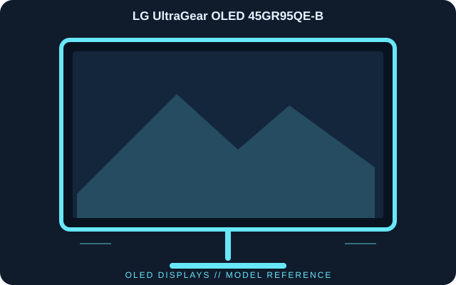

[ INDIVIDUAL COMPONENT // DISPLAYS ]
LG UltraGear OLED 45GR95QE-B
A large-format 800R curved OLED gaming display with a 21:9 ultrawide panel, 240 Hz refresh and HDMI 2.1 inputs.

IDENTIFICATION: LG UltraGear OLED 45GR95QE-B; 2023 generation. Verify the full model code, region and hardware revision on the unit label. Published specifications describe the identified configuration; its matching manual and label take precedence if revisions differ.
Published specifications
| Catalog subcategory | Oled Displays |
|---|---|
| Exact model | LG UltraGear OLED 45GR95QE-B |
| Panel / native resolution | 44.5-inch OLED, 3440 × 1440 (21:9), 800R curve |
| Maximum refresh rate | 240 Hz |
| Response time | 0.03 ms GtG (manufacturer claim) |
| Typical brightness / color | 200 cd/m² typical; 98.5% DCI-P3 typical |
| Video inputs | HDMI 2.1 × 2 and DisplayPort 1.4 |
| USB connectivity | USB upstream and downstream hub ports |
| HDR / sync | HDR10 input; NVIDIA G-SYNC Compatible and AMD FreeSync Premium support |
Compatibility & connectivity notes
For 3440 × 1440 at 240 Hz, check the GPU, cable and selected HDMI/DisplayPort input against LG’s timing table; consoles may expose a different subset of modes. The ultrawide resolution needs compatible software for full-screen presentation. Use built-in OLED care features as directed and avoid prolonged static high-contrast content.
Preservation notes
Record the complete model suffix, serial/date code, input selection, source device, cable or adapter, tested timing and observed condition. Retain the matching regional manual and any calibration or service records with the display. Follow the manufacturer’s cleaning and service instructions; do not open CRT equipment without appropriate high-voltage training.
Manufacturer documentation & authoritative sources
- LG — 45GR95QE-B product specificationsManufacturer documentation and model-specific reference.
- LG — 45GR95QE-B support and user documentationManufacturer documentation and model-specific reference.